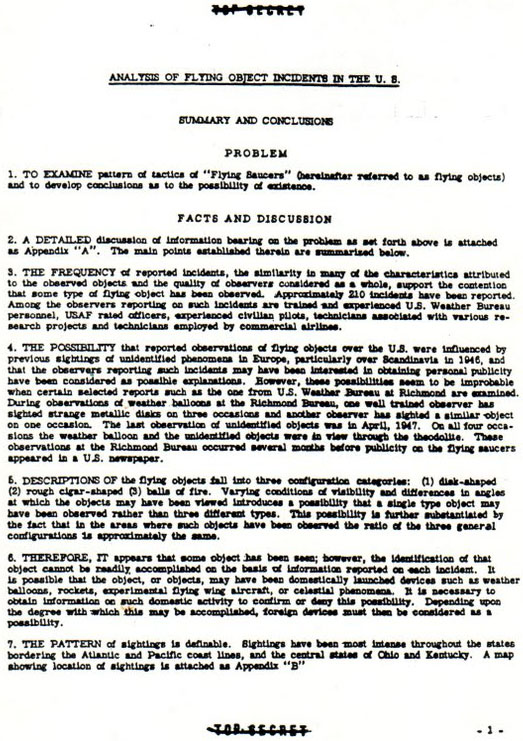

Rapport du Quartier-Général de l'USAF, Directoire du Renseignement (Washington), 2-7341
Document Top Secret à l'époque, .
, DATE 28 AVR 1949, N° 100-203-79, CY. NO 102 OF 103
TOP SECRET AF cy 102, CONTROLE n° 6637, (déclassé par la suite)
Synthèse et conclusions
Problème
Examiner les schémas de "soucoupes volantes" (désignés ici par la suite comme objets volants)
et développer des conclusions quant à la possibilité d'existence.
Faits et discussion
Page 2 du rapport d'origineUne discussion détaillée de l'information touchant au problème telle que mise en avant
ci-dessus est attachée en annexe "A". Les points principaux qui y sont établis sont
résumés ci-dessous.
La fréquence des incidents signalés, la similarité de nombre des caractéristiques attribuées
aux objets observés et la qualité des observateurs dans leur ensemble, soutiennent la controverse qu'un certain
type d'objet volant a été observé. Approximativement 210 incidents ont été signalés. Parmi les observateurs
rapportant de tels incidents se trouvent des membres formés et expérimentés du personnel du Bureau Météo U.S.,
des officiers gradés de l'USAF, des pilotes
civils expérimentés, des techniciens associés à divers projets de recherche et des techniciens employés par des
lignes aériennes commerciales.
Les possibilités que des observations signalées d'objets volants au-dessus des U.S. aient été
influencées par des observations antérieures de phénomènes non identifiés en Europe, en particulier au-dessus de la Scandinavie en 1946, et que les observateurs rapportant de tels incidents puisse avoir été
intéressés par l'obtention d'une publicité personnelle ont été considérées comme des explications possibles.
Cependant, ces possibilités semble être improbables lorsque certains rapports sélectionnés tels que celui du
Bureau Météo U.S. de Richmond sont examinés. Lors d'observations de ballons météos au Bureau de Richmond, un observateur
très entraîné a observé des disques métalliques étranges en 3 occasions et un autre observateur a vu un objet
semblable en 1 occasion. La dernière observation d'objets non identifiés fut en april 1947. Sur l'ensemble des 4 occasions le ballon météo et les objets non identifiés étaient en
vue à travers le théodolite. Ces observations au Bureau de Richmond eurent lieu plusieurs mois avant que de la
publicité sur les soucoupes volantes apparaisse dans un journal des U.S..
Les descriptions des objets volants tombent dans 3 catégories de configuration : (1) en forme
de disque (2) grossièrement en forme de cigare (3) boules de feu. Les conditions
variables de visibilité et les différences dans les angles avec lesquels les objets auraient pu être vus
introduisent une possibilité qu'un seul type d'objet puisse avoir été observé plutôt que 3 types différents.
Cette possibilité est encore justifiée par le fait que dans les zones où de tels objets ont été observés le
ratio des 3 configurations générales est approximativement le même.
Page 3 du rapport d'origine

Par conséquent, il apparaît qu'un certain objet a été vu ; cependant, l'identification de cet
objet ne peut être facilement faite sur la base de l'information rapportée dans chaque incident. Il est possible
que l'objet, ou les objets, puisse avoir été des appareils lancés domestiquement comme des ballons météo, des fusées, des appareils de type aile
volante expérimentaux, ou des phénomènes célestes. Il est nécessaire d'obtenir des informations sur une telle
activité domestique pour confirmer ou rejeter cette possibilité. En fonction du degré auquel ceci pourrait être
accompli, les appareils étrangers doivent alors être considérés comme une possibilité.
Le schéma des observations est définissable. Les observations ont été les plus intenses dans
tous les états bordant les côtes Atlantique et Pacifique, et les états centraux de l'Ohio et du Kentucky. Une
carte montrant les lieux des observations est jointe en annexe "B".
L'origine des appareils n'est pas décelable. Il y a 2 possibilités :
Les objets sont des appareils domestiques, et si c'est le cas, leur identification ou origine peut être
établie par une étude de l'ensemble des lancers d'objets aériens. Les appareils domestiques de type aile
volante observés dans divers aspects de vol pourraient être responsables pour certains des objets volants
signalés, en particulier ceux décrits comme des disques et des formes grossières de cigare (voir annexes "C" et "D"). Parmi ceux ayant été opérationnels dans
les années récentes sont le XF5U-1 ("Crêpe volante") développé par Chance-Vaught, le Northrup B-35 et le
Northrup YB-49 propulsé par turbo-jet. L'existence actuelle de tout appareil de type aile volante développé
de manière privée n'a pas été déterminée mais un de ces appareils, le monoplane Arup sans queue, était
opérationnel à South Bend (Indiana) avant .
Les objets sont étrangers, et si c'est le cas, il semblerait plus logique de considérer qu'ils
proviennent d'une source soviétique. Les soviétiques possèdent des informations sur un certain nombre
d'appareils allemands de type aile volante tels que le Gotha P60A, le bombardier à réaction longue portée
Junkers EF 130 et le chasseur bi-réacteurs Horten 229, qui resemble particulièrement à certaines des
description d'objets volants non identifiés (voir annexe "D"). Dès
Tscheranowsky développa un appareil "Parabole", un design entièrement en aile, qui fut le
résultat d'une expérimentation soviétique considérable avec des planeurs de la même forme générale. Les
appareils soviétiques basés sur ce tels designs auraient pu avoir des vitesses approchant les vitesses
trans-soniques attribuées à certains objets volants ou une performance globale supérieure si l'on suppose la
réussite du développement de certains dispositifs de propulsion inhabituels tels que le moteur à énergie
atomique.
Que les soviétiques ont actuellement un intérêt pour les appareils de type aile volante est
suggéré par leur utilisation du Dr. Guenther Bock qui, à la fin de la 2nde guerre mondiale, était en charge du
programme d'aile volante en Allemagne (voir annexe "A", paragraphe 3, page
4). Des accomplissements satisfaisants pour l'URSS sont indiqués indirectement par la reconnaissance personnelle
dont on rapporte qu'il l'aurait reçue en URSS. Il a été récemment rapportée que l'URSS prévoyait de construire
une flotte de 1800 appareils ailes volantes Horten. Une information de faible évaluation a été reçue indiquant
qu'un régiment de chasseurs nocturnes à réaction, de modèle Horten XIII, se trouve à Kuzmikha, une base aérienne
à 2 miles au sud ouest d'Irkutsk. Kuzmikha est identifié comme l'un d'un certain nombre de terrain d'aviation
pour la protection d'une complexe d'énergie atomique à Irkutsk. Le Horten XIII développé par l'Allemagne était
un planeur.
Page 4 du rapport d'origine
En supposant que les objets pourraient finalement être identifiés comme des appareils étrangers
ou soutenus par l'étranger, les raisons possibles de leur apparition au-dessus des U.S. nécessitent d'être
considerées. Plusieurs explications possibles apparaissent remarquables, à savoir :
De réfuter la confiance U.S. dans la bombe atomique comme l'arme de guerre la plus avancée et la
plus décisive.
De réaliser des missions de reconnaissance photographique.
De tester les défenses aériennes U.S..
De mener des vols de familiarisation au-dessus du territoire U.S.
Conclusions
Puisque l'Air Force est responsable du contrôle de l'air dans la défense des U.S., il est
impératif que l'ensemble des autres agences coopèrent pour confirmer ou réfuter la possibilité que ces objets
ont une origine domestique. Autrement, s'il est catégoriquement indiqué qu'il n'y a pas d'explication
domestique, les objets représentent une menace et garantissent des efforts plus actifs d'identification et
d'interception.
Il doit être accepté que certains types d'objets volants ont été observés, bien que leurs
identification et origine se sont pas discernables. Dans l'intérêt de la défense nationale il serait imprudent
de sous-estimer la possibilité que certains de ces objets puissent être d'origine étrangère.